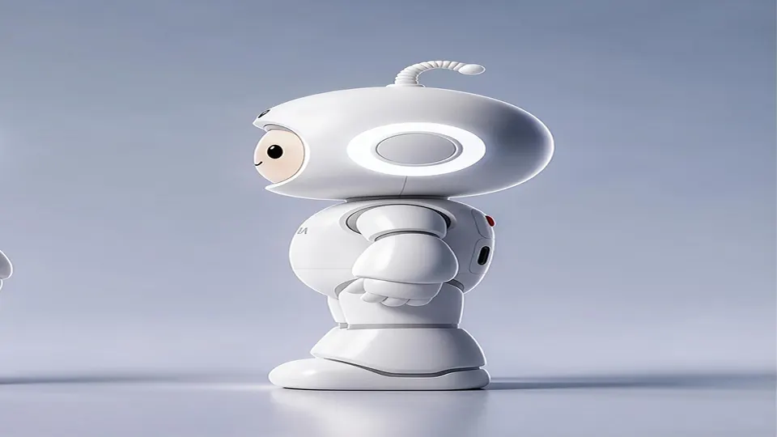

Chery's AiMOGA opens global pre-orders for Mobo, a 22-DOF home-companion humanoid
- AiMOGA Robotics is Chery's robotics brand; it announced the Mobo pre-order plan on October 16, 2026.
- Mobo is AiMOGA's first consumer-grade humanoid robot, designed for home companionship; global pre-orders open at the 2026 Chery International User Summit in Wuhu, October 19–23.
- It is powered by the proprietary MoAgent AI system: interprets complex instructions, divides them into actionable steps, and plans longer-term tasks rather than responding to isolated commands.
- Full-body 22-degree-of-freedom motion system; spatial perception plus multimodal interaction (voice, visual information, conversational context); dynamic obstacle avoidance; remembers family members' habits and preferences with privacy protection from the outset.
- AiMOGA reports more than 100 use cases, cumulative global deliveries above 3,000 units, and operations in 60+ countries and regions.
- The announcement does not include pricing, ship dates, or preorder regions.
AiMOGA Robotics, Chery's robotics brand, announced on October 16, 2026 that it will open global pre-orders for Mobo, its first consumer-grade humanoid robot built for home companionship, at the 2026 Chery International User Summit in Wuhu, October 19–23. It is the automaker's most direct claim yet that car-grade manufacturing can put a robot in the living room.
The robot
Mobo runs AiMOGA's proprietary MoAgent AI system, which the company describes as goal-driven rather than command-driven: it is designed to interpret complex instructions, divide them into actionable steps, and plan longer-term tasks instead of simply responding to isolated commands. Combined with spatial perception and multimodal interaction, the robot can recognise objects, use voice, visual information and conversational context, and navigate home environments with dynamic obstacle avoidance.
The hardware is a full-body, 22-degree-of-freedom motion system built for expressive gestures, stable movement — and, in the press photos, dance routines. Mobo is also designed to remember individual family members' habits and preferences, with what AiMOGA calls privacy protection built in from the outset. The robot had already appeared at the World Robot Conference and the World Manufacturing Convention; the Wuhu summit is its formal global showcase, with pre-orders opening at the same time.
The showcase and the lineup
Under the theme “ECO-TECH FOR OUR FUTURE LIFE,” the summit will stage AiMOGA's wider portfolio in practical settings: police robots undertaking patrol and traffic guidance, healthcare robots offering visitor guidance at medical stations, the Mornine robot in livestreaming and checkout-free retail zones, and the Argos Pro quadruped demonstrating autonomous following and load carrying. Mobo's own demos focus on companionship and educational support for the home — the lineup is meant to show one embodied-AI stack spanning public services, commercial operations, and everyday home activities.

Why Chery thinks it can win here
AiMOGA draws explicitly on Chery's automotive assets: the R&D network, an established supply chain, high-precision environmental perception, and CheryMind, the company's automotive large AI model. The numbers AiMOGA cites put it beyond a concept house: more than 100 use cases across vehicle dealerships, retail, government services, traffic management, security, education and healthcare; cumulative global deliveries above 3,000 units; and operations spanning more than 60 countries and regions.
Mobo extends that footprint from commercial services into the consumer market, under Chery's global operating philosophy “In Somewhere, For Somewhere, Be Somewhere.” The thesis is that the same engineering that ships millions of cars can now ship a companion robot at consumer scale.
The fine print
What the announcement does not include: pricing, ship dates, or which regions the pre-orders cover — all presumably arriving at the summit itself. Until then, Mobo is a design, a capability list, and a date. The home humanoid space is also getting crowded fast — this very week another consumer humanoid, FF Nova, went on sale — so the summit will be the first real test of whether AiMOGA's automotive-backed approach stands apart.
Frequently asked questions
What is Mobo?
Mobo is AiMOGA's first consumer-grade humanoid robot, designed for home companionship. AiMOGA Robotics, Chery's robotics brand, will showcase it formally and open global pre-orders at the Chery International User Summit in Wuhu, October 19–23, 2026.
What AI powers Mobo?
AiMOGA's proprietary MoAgent AI system, which the company describes as goal-driven: it interprets complex instructions, breaks them into actionable steps, and plans longer-term tasks. Combined with spatial perception and multimodal interaction — voice, vision, conversational context — it is designed to recognise objects and navigate home environments with dynamic obstacle avoidance.
When can you actually buy one?
Pre-orders open at the summit, but the announcement does not disclose pricing, ship dates, or preorder regions — those details presumably arrive at the event itself.